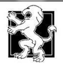
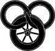

Caemlyn
Rand dönerek sürücü koltuğunun arkasında diz çöktü. Rahatladı ve gülmekten kendini alamadı. "Başardık, Mat! Sana başaracağımızı..."
Gözleri Caemlyn'e takılınca sözcükler ağzında öldü. Baerlon'dan sonra, hatta Shadar Logoth'un yıkıntılarından sonra büyük bir şehrin neye benzemesi gerektiğini bildiğini sanıyordu, ama bu... bu inanabileceğinden daha fazlaydı.
Büyük duvarın dışında, geçtikleri her kasaba toplanmış ve buraya yerleşmiş gibi, binalar yan yana, dip dibe toplanmıştı. Hanlar üst katlarını evlerin kiremit çatılarının üzerine uzatmışlardı. Alçak, geniş ve penceresiz dükkanlar hepsini birden omuzluyordu. Kırmızı tuğla, gri taş, beyaz badana birbirine karışmış, göz görebildiğince uzanıyordu. Baerlon burada fark edilmeden kaybolabilirdi ve Beyazköprü, tek dalga yaratamadan yirmi kez yutulurdu.
Ve duvar. Dik, on beş metre yüksekliğinde, açık gri taştan yapılmış, beyaz ve gümüş çizgilerle süslü duvar, büyük bir çember çizerek kuzeye ve güneye kıvrılıyordu. Rand ne kadar uzandığını merak etti. Üzerinde yuvarlak, duvardan da yüksek kuleler yükseliyor, her birinin tepesinde kırmızı beyaz flamalar rüzgârda dalgalanıyordu. Duvarın içinde başka kuleler görülüyordu; duvarlardakinden de yüksek, ince kuleler ve güneşin altında beyaz ve altın rengi parlayan kubbeler. Dinlediği bin hikâye, aklında kralların ve kraliçelerin, tahtların, güçlerin ve efsanelerin şehirlerini resmetmişti ve Caemlyn, zihninin derinliklerindeki o resimlere, suyun sürahiye uyması gibi uyuyordu.
Araba dar yolda gıcırdayarak şehre, iki yanında kule bulunan şehir kapılarına doğru ilerledi. Tacir kafilesinin vagonları bir dev gibi, ya da yan yana dikilen on dev gibi duran taştan kubbeli kemerlerin altında sıralandı. Duvarsız pazarlar yolun iki tarafı boyunca uzanıyordu, kırmızı ve mor çatı kiremitleri pırıl pırıl parlıyor, onların altında tezgahlar ve kümesler uzanıyordu. Böğüren dana, inek ve öküzler, viyaklayan kazlar, gıdaklayan tavuklar, meleyen keçiler ve koyunlar, ve avazı çıktığı kadar bağıran insanlar. Caemlyn kapılarının yönünde bulunan ve gürültüyle tüten bacası bulunan bir duvara doğru yöneldiler.
"Size ne demiştim?" Bunt sesini duyurabilmek için bağırırcasına yükseltti. "Dünyanın en büyük şehri. Bilirsiniz, Ogier tarafından inşa edildi. En azından Şehir İçi ve Saray'ın bulunduğu alan. Caemlyn bu kadar eskidir. Caemlyn, iyi Kraliçe Morgase'in, Işık onu aydınlatsın, Andor'un yasa koyucusu ve barış koruyucusu, ikamet ettiği yerdir. Yeryüzündeki en muhteşem şehir."
Rand kabul etmeye hazırdı. Ağzı bir karış açık kalmıştı, ve gürültüden kurtulmak için kulaklarını elleriyle kapamak istiyordu. İnsanlar sokaklarda dolaşıyordu, ki neredeyse Emond Çayırı'nda Bel Tine'daki yeşillikler kadar kalabalıktılar. Baerlon'da çok fazla insan olduğunu düşündüğü zamanları hatırladı, ve neredeyse gülüyordu. Mat'e baktı ve gülümsedi. Mat kulaklarını elleriyle kapamıştı, ve omuzları da kendini korumak ister gibi kamburlaşmıştı.
"Bunun içinde nasıl gizleneceğiz?" Rand'ı bakarken gördüğünde sesini duyurmak için yükselterek. "Kime ne kadar güveneceğimizi nasıl bileceğiz? O kadar çok insan var ki. Işık, gürültü!"
Rand cevap vermeden önce Bunt'a baktı. O çiftçi şehrin büyüsüne kapılmıştı; gürültünün de etkisiyle zaten hiçbir şey duyamazdı. Yine de Rand ağzını Mat'in kulaklarına yaklaştırdı. "Bu kadar insan içinde bizi nasıl bulacaklar? Onu göremiyor musun, seni yün kafalı aptal? O lanet diline hakim olmayı öğrenirsen, güvende oluruz!" Bir elini uzatıp pazardan her şeyi cebine atıyordu, şehir surları hala önlerindeydi. "Şuna bak, Mat! Burada bir şey olabilirdi. Bir şey! Bizi bekleyen Moiraine'i bulmalıyız, ve Egwene, ve diğerlerini."
"Eğer hayattalarsa. Bana soracak olursan, onlar Aşık gibi öldüler."
Rand'ın yüzündeki gülümseme soldu, ve dönüp yaklaşan kapılara baktı. Caemlyn gibi bir şehirde her şey olabilirdi. Bu düşünceyi inatla aklında tutuyordu.
Atlar hiç de hızlı gidemiyordu, Bunt dizginleri çırpıyordu; kapıların yakınına geldiklerinde, kalabalık arttı, Omuz omuza çarpıyor, at arabasını ve vagonları sıkıştırıyorlardı. Rand yolda ilerlemekte olan üstü başı toz içinde genç adamlar gördüğüne memnun oldu. Kalabalık, yaşları her ne ise, yol yorgunu görünen, köhne arabaları ve yorgun atları, çoğu geceler sert zeminde yatmaktan kırışmış elbiseleri, yorgun gözleri olan ve adımlarını sürüyen bu gençleri kapılara doğru sürüklüyordu. Yorgun ya da değil, bu gözler kapılardan bir geçseler tüm yorgunluklarını üzerlerinden atacaklarmış gibi kapıya sabitlenmişti.
Yarım düzine Kraliçe Muhafızı kapıda duruyordu, onların temiz kırmızı-ve-beyaz cüppeleri ve parlak demir-ve-örgü zırhları taş kemerin altından akan insanların çoğuyla keskin bir tezat oluşturuyordu. Sırtları dik ve başları kalkık, yeni gelenleri küçümseyen bir tavırla dikkatle izliyorlardı. Açıkça bir an önce içeri girseler de çekip gitsek niyetindeydiler. Şehirden ayrılanlara yol açmak bir yana, sert sözlerle onları daha hızlı itmeye çalışıyor, kimseyi engellemiyorlardı.
"Yerinizi koruyun. İtmeyin. İtmeyin, Işık gözünüzü kamaştırsın! Burada herkes için yer var, Işık bize yardım eder. Yerinizi koruyun."
Bunt'un arabası yavaşça akan kalabalıkla birlikte kapılardan yalpalayarak geçip Caemlyn'e girdi.
Şehir alçak tepelerin üzerinde yükseliyordu, bir merkeze çıkan merdivenler gibi. Diğer bir duvar merkezi çevreliyor, bembeyaz parlıyor ve bu tepelerin üzerinden akıyordu. İç kısımlarda daha fazla kule ve kubbe bulunuyor, beyaz ve altın ve mor, tepelerin yükseltisiyle birlikte kendi yükseltileri onlara Caemlyn'in kalanına tepeden bakıyor görünümü veriyordu. Rand, Bunt'un bahsettiği İç Şehir'in burası olması gerektiğini düşündü.
Caemlyn Yolu şehrin içine girer girmez değişmiş, ortasında çimenler ve ağaçlardan genişçe bir şeritle bölünmüş geniş bir bulvar halini almıştı. Çimenler güneşten yanmıştı ve ağaçlar çıplaktı, fakat insanlar görülmedik şekilde acele ediyor, gülüyor, konuşuyor, tartışıyor, bu insanların yaptığı her şeyi yapıyorlardı. Buralara bu yıl baharın henüz gelmediğini, belki hiç gelmeyeceğini bilmiyormuş gibi. Rand görmediklerini, belki göremediklerini, belki görmeyi tercih etmediklerini fark etti. Gözleri yapraksız dallardan kaçıyor, ölü ya da ölmekte olan otların üzerinde bakışlarını yere indirmeden yürüyorlardı. Görmedikleri bir şeyi görmezden gelebilirlerdi; görmedikleri bir şey, aslında orada olmayabilirdi.
Rand, ağzı bir karış açık şehre ve insanlara bakarken, araba bulvardan daha dar, ama yine de Emond Meydanı'ndaki en geniş sokaktan daha geniş bir yan yola sapınca şaşırdı. Trafik burada biraz daha hafifti; kalabalık hızını kesmeden arabanın çevresinde ikiye ayrılıyordu.
"Pelerininin altında ne saklıyorsun, gerçekten de Holdwin'in söylediği şeyi mi?"
Rand heybelerini omzuna atmak üzereydi. Tek kası seyirmedi. "Ne demek istiyorsun?" Sesi de sakindi. Midesi ekşi bir düğüme dönüşmüştü, ama sesi sakindi.
Mat bir eliyle esnemesini bastırdı, ama diğer elini ceketinin altına soktu, Shadar Logoth'dan aldığı hançeri tutuyordu, Rand biliyordu ve gözleri kafasına sardığı atkının altında sert, kovalanıyormuş gibi bir bakış kazandı. Bunt, o elin altında gizli bir silah olduğunu biliyormuş gibi Mat'e bakmaktan kaçındı.
"Sanırım bunun bir anlamı yok. Bak şimdi, eğer Caemlyn'e geleceğimi duymuşsan, kalanını duyacak kadar orada durmuşsun demektir. Ödül peşinde olsaydım, Kaz ve Taç'a girmek için bir bahane bulur, Holdwin ile konuşurdum. Ama Holdwin'den pek hoşlanmam, arkadaşını ise hiç sevmedim. Siz ikinizi, dünyada her şeyden çok istiyor gibiydi."
"Ne istediğini bilmiyorum," dedi Rand. "Onu daha önce hiç görmedik." Bu doğru olabilirdi; Rand, bir Soluk'u bir diğerinden ayıramıyordu.
"Hı hı. Eh, dediğim gibi, ben hiçbir şey bilmiyorum ve sanırım bilmek de istemiyorum. İnsanlar daha fazla sorun aramaya başlamadan da yeterince dert var ortalıkta."
Mat ağır ağır eşyalarını topladı. Aşağı inmeye hazır olduğunda Rand çoktan arabadan inmiş, sabırsızca bekliyordu. Mat yayını, sadağını ve battaniye rulosunu kucaklayarak ve mırıldanarak sert bir biçimde arabaya sırtını döndü. Gözlerinin altında koyu renk gölgeler belirmişti.
Rand'ın midesi guruldadı. Yüzünü buruşturdu. Açlık, midesindeki ekşi burkulma ile birleşince, kusmaktan korkmaya başlamıştı. Mat beklenti içinde ona bakıyordu. Ne tarafa gitmeli? Şimdi ne yapmalı?
Bunt eğildi ve yaklaşmasını işaret etti. Rand, Caemlyn hakkında tavsiye almayı umarak yaklaştı.
"Şunu sakla..." Yaşlı çiftçi durdu ve ihtiyatla çevreye bakındı. İnsanlar arabanın iki yanından geçiyordu, ama yolu tıkadıkları için küfreden birkaç kişi dışında kimse onlara dikkat etmiyordu. "Takmaktan vazgeç," dedi, "sakla, sat. Ver gitsin. Benim tavsiyem bu. Onun gibi bir şey dikkat çekecektir ve bunu hiç istemediğinizi tahmin ediyorum."
Aniden doğruldu, atına dilini şaklattı ve başka tek söz söylemeden, tek bakış fırlatmadan kalabalığın içinde arabasını ağır ağır sürdü. Fıçı dolu bir araba onlara doğru geliyordu. Rand yoldan sıçradı ve sendeledi. Bir daha baktığında Bunt ve arabası gözden kaybolmuştu.
"Şimdi ne yapıyoruz?" diye sordu Mat. Dudaklarını yaladı, iri iri açılmış gözlerle yanlarından geçip giden insanlara, tepelerine dikilen altı katlı binalara baktı. "Artık Caemlyn'deyiz, ama ne yapacağız?" Ellerini kulaklarından çekmişti, ama kulaklarını yine örtmek istiyormuş gibi seyiriyorlardı. Şehrin üzerinde alçak, tekdüze bir gürültü asılıydı. Çalışan binlerce dükkanın mırıltısı, binlerce kişinin konuşmaları. Rand için tüm bunlar, devamlı vızıldayan dev bir arı kovanının içinde olmak gibiydi. "Burada olsalar bile, Rand, bütün bunların içinde nasıl bulacağız?"
"Moiraine bizi bulacaktır," dedi Rand yavaşça. Şehrin görkemi, omuzlarına bir yük gibi binmişti; kaçmak, bunca insandan ve gürültüden uzaklaşmak istiyordu. Tam'in öğrettiklerine rağmen boşluk ondan kaçınıyordu; gözleri boşluğun içine şehri de alıyordu. Rand hemen yakınında olanlara yoğunlaştı, ötede kalan her şeyi görmezden geldi. Tek bir sokağa baktığı zaman, neredeyse Baerlon gibi görünüyordu. Baerlon, güvende olduklarını sandıkları son yer. Artık hiç kimse güvende değil. Belki hepsi ölmüştür. O zaman ne yapacağız?
"Hayattalar! Egwene hayatta!" dedi sertçe. Geçenlerden bazıları tuhaf tuhaf baktı.
"Belki," dedi Mat. "Belki. Ya Moiraine bizi bulamazsa? Ya bizi bula bula... şey..." Ürperdi, ağzına geleni, sözcüklere dökemedi.
"Bunu olduğu zaman düşünürüz," dedi Rand kararlılıkla. "Eğer olursa." En kötü olasılık Elaida'yı, Saray'daki Aes Sedai'yi aramak demekti. Rand ilk önce Tar Valon'a gitmeyi tercih ederdi. Thom'un Kızıl Ajahlar ya da Siyahlar hakkında söylediklerini Mat'in hatırlayıp hatırlamadığını bilmiyordu, ama Rand kesinlikle hatırlıyordu. Midesi yine burkuldu. "Thom, Kraliçenin Takdisi isimli bir hanı bulmamızı söyledi. İlk önce oraya gideceğiz."
"Nasıl? Paramızı birleştirsek bile bir öğün yemek satın alamayız."
"En azından başlayacak bir yer olur. Thom orada yardım bulabileceğimizi düşünüyordu."
"Yapamam... Rand, her yerdeler." Mat, gözlerini kaldırım taşlarına dikti ve yerinde büzülerek çevrelerindeki insanlardan uzaklaşmaya çalıştı. "Nereye gidersek gidelim ya tam arkamızdalar, ya da bizi bekliyor oluyorlar. Kraliçenin Takdisi'nde de olacaklar. Ben... yapamam... Bir Soluk'u hiçbir şey durduramaz."
Rand, titremekten zor alıkoyduğu eliyle Mat'in yakasını kavradı. Mat'e ihtiyacı vardı. "Buraya kadar geldik, değil mi?" diye sordu boğuk bir fısıltıyla. "Daha bizi yakalamadılar. Pes etmezsek sonuna kadar gidebiliriz. Ben pes edip kasaplık koyun gibi beklemeyeceğim. Beklemeyeceğim! Ee? Açlıktan ölene kadar orada duracak mısın? Ya da birileri gelip seni bir çuvala doldurana kadar?"
Mat'i bıraktı ve döndü. Tırnaklarını avuçlarına batırmıştı, ama elleri hâlâ titriyordu. Mat aniden yanında yürümeye başladı. Gözleri hâlâ yerdeydi. Rand uzun bir nefes bıraktı.
"Üzgünüm, Rand," diye mırıldandı Mat.
"Boş ver," dedi Rand.
Mat, cansız bir sesle sözcükler ağzından dökülürken başını ancak insanlara çarpmamasına yetecek kadar kaldırıyordu. "Köyü bir daha asla göremeyeceğimizi düşünmekten kendimi alamıyorum. Ben köye dönmek istiyorum, istiyorsan gül; umurumda değil. Şu anda annemin bana söylenip duruyor olması için neler vermezdim. Beynime yük binmiş gibi hissediyorum; büyük yük. Her yer yabancılarla dolu, güvenilecek biri varsa bile, kime güveneceğimizi anlamanın yolu yok. Işık, İki Nehir o kadar uzakta kaldı ki, bana dünyanın öbür ucundaymış gibi geliyor. Yalnızız ve bir daha asla köye dönemeyeceğiz. Öleceğiz, Rand."
"Henüz değil," diye terslendi Rand. "Herkes ölür. Çark döner. Ama ben kıvrılıp ölümü beklemeyeceğim."
"Al'Vere Efendi gibi konuşuyorsun," diye homurdandı Mat, ama sesi biraz daha canlı çıkıyordu.
"Güzel," dedi Rand. "Güzel." Işık, ne olur diğerleri iyi olsun. Lütfen yalnız kalmamıza izin verme.
Kraliçenin Takdisi'nin yerini sormaya başladı. Aldığı yanıtlar değişiyordu, kimileri ait oldukları yerde kalmadıkları için küfrediyordu, ama daha çok, omuz silkmeler ve anlamsız bakışlarla karşılaşıyorlardı. Bazıları tek bir bakış fırlattıktan sonra geçip gidiyordu.
Neredeyse Perrin kadar iriyarı, geniş yüzlü bir adam başını bir yana eğdi ve, "Kraliçenin Takdisi, ha? Siz köylüler Kraliçe'nin adamları mısınız?" dedi. Geniş kenarlı şapkasına beyaz bir rozet takmıştı ve uzun ceketinde beyaz bir kol bandı taşıyordu. "Eh, çok geç geldiniz."
Kahkahalar atarak uzaklaştı. Rand ve Mat şaşkınlık içinde birbirlerine baktılar. Rand omuzlarını silkti; Caemlyn'de bir sürü tuhaf insan vardı, daha önce gördüklerine hiç benzemeyen insanlar.
Bazıları kaba kaba sırıtıyordu, derileri çok koyu ya da çok solgundu, ceketlerinin kesimleri tuhaf, renkleri parlaktı, şapkaları sivri tepeli ya da uzun tüylüydü. Yüzlerine peçe örten kadınlar vardı, boyları kadar geniş, katlı elbiseler giymiş kadınlar, bedenlerini han hizmetkârlarından daha fazla teşhir eden elbiseler giymiş kadınlar. Zaman zaman başlarına tüyler takılmış dört ya da altı atın çektiği, boya ve işlemelerle rengarenk arabalar sokaktaki kalabalığın içinde zorla ilerliyordu. Her yerde tahtırevanlar vardı, taşıyan adamlar kimi ittirdiklerine bakmadan kalabalığı yarıp geçiyordu.
Rand, bir kavganın bu şekilde başladığını gördü, bağırıp çağıran bir adam yığını yumruklar savururken kırmızı çizgili ceket giymiş soluk derili bir adam yan yatmış tahtırevandan çıktı. O zamana kadar yalnızca oradan geçiyormuş gibi görünen kaba giyimli iki kişi, adam uzaklaşamadan üzerine atladı. İzlemek için duran kalabalık öfkelenmeye başlamıştı; mırıldanıyor, yumruklarını sıkıyorlardı. Rand, Mat'in kolunu çekerek yoluna devam etti. Mat'in ikinci bir uyarıya ihtiyacı yoktu. Küçük kargaşanın kükremesi, sokakta peşlerinden geldi.
İnsanlar birkaç kez, yollarını değiştirip ikisine yaklaştı. Tozlu giysileri şehre yeni geldiklerini belli ediyordu ve bu, bazılarını mıknatıs gibi çekiyor gibiydi. Sinsi görünüşlü adamlar gözleri etrafta gezinerek, her an kaçmaya hazır görünerek Logain'i konu alan andaçlar satmaya çalışıyorlardı. Rand, teklif edilen sahte Ejder pelerini ve Logain'in kılıcı parçalarının toplanınca yarım düzine pelerin ve iki kılıç yapacağını hesapladı. Mat'in yüzü, en azından ilkinde, ilgi ile canlandı, ama Rand sertçe hayır dedi ve adamlar başlarını eğerek, çabuk çabuk, "Işık Kraliçe'yi aydınlatsın, iyi efendim," diyerek kayboldular. Dükkanların çoğunda sahte Ejder'i zincirler içinde, Kraliçe'nin önünde gösteren resimlerle süslenmiş tabaklar ve kupalar sergileniyordu. Ve caddelerde Beyazpelerinler vardı. Her biri, tıpkı Baerlon'da olduğu gibi, kendisi ile birlikte ilerleyen bir açıklıkla yürüyordu.
Fark edilmemek, Rand'ın üzerinde çok düşündüğü bir konuydu. Pelerinini kılıcının üzerinde tuttu, ama bu yetmeyecekti. Eninde sonunda biri, ne sakladığını merak edecekti. Bunt'ın tavsiyesine uyarak takmaktan vazgeçemezdi. Bu, Tam ile arasındaki bağ idi. Babası ile.
Kalabalıkta kılıç takan başkaları da vardı, ama hiçbirinin üzerinde dikkat çekici balıkçıl damgası yoktu. Ama Caemlynlilerin tümü ve yabancıların bazıları, kılıçlarının uçlarına ve kabzalarına kumaş şeritler sarmıştı. Kimi kırmızı kumaş sarıp beyaz iplikle tutturmuştu, kimi beyaz kumaş sarıp kırmızı iplikle bağlamıştı. O sargıların altında yüz balıkçıl damgası olabilirdi ve kimse göremezdi. Dahası, yerel modaya uymak şehre daha fazla uyum sağlamış gibi görünmelerini sağlayacaktı.
Dükkanların çoğunun önüne kumaş ve ip sergileyen masalar atılmıştı ve Rand birinde durdu. Kırmızı kumaş, beyaz kumaştan daha ucuzdu, ama renk dışında hiçbir fark göremiyordu. Bu yüzden, Mat'in çok az paraları kaldığı yönündeki şikayetlerine aldırmadan kırmızı kumaş ve bağlamak için beyaz ip aldı. Sıkı ağızlı dükkancı, Rand'ın bakır paralarını sayarken onları alayla baştan aşağı süzdü ve Rand içeride kılıcını sarıp saramayacağını sorduğunda küfretti.
"Biz Logain'i görmeye gelmedik," dedi Rand sabırla. "Biz yalnızca Caemlyn'i görmeye geldik." Bunt'ı hatırladı ve ekledi: "Dünyadaki en ihtişamlı şehri." Dükkancı yüzünü buruşturmaya devam etti. "Işık iyi Kraliçe Morgase'i aydınlatsın," dedi Rand umutla.
"Sorun çıkaracak olursan," dedi adam ekşi ekşi. "Sesime gelecek yüz adam var ve askerler bakmasa bile onlar icabınıza bakar." Susup Rand'ın ayağının yanına tükürdü. "Pis işinize bakın."
Rand, adam neşeyle iyi günler dilemiş gibi başını salladı ve Mat'i çekerek uzaklaştı. Mat omzunun üzerinden dükkana bakmaya, kendi kendine homurdanmaya devam etti. Rand sonunda onu boş bir yan yola çekti. Ne yaptıklarını kimse görmesin diye sırtlarını caddeye verdiler. Rand, kılıç kemerini çıkardı ve kın ile kabzaya kumaş sarmaya başladı.
"İddiaya girerim o lanet kumaş için senden iki kat fazla para almıştır," dedi Mat. "Hatta üç kat."
Kumaşı ve ipi düşmeyecek şekilde tutturmak göründüğü kadar kolay değildi.
"Hepsi bizi aldatmaya çalışacak, Rand. Başka herkes gibi sahte Ejder'i görmeye geldiğimizi sanıyorlar. birisi biz uyurken kafamıza vurmazsa şanslı sayılırız. Burası durulacak yer değil. Çok fazla insan var. Buradan çıkıp Tar Valon'a gidelim. Ya da güneye, Illian'a. Boru Avı için toplanmalarını görmek hoşuma giderdi. Köye dönemeyeceksek, gidelim yeter."
"Ben kalıyorum," dedi Rand. "Şimdiye dek gelmemişlerse bile, eninde sonunda gelip bizi arayacaklar."
Sargıları herkesin yaptığı gibi yaptığından emin değildi, ama kabzadaki ve kındaki balıkçıllar gizlenmişti ve Rand iyi tutturduğunu düşünüyordu. Caddeye dönerlerken, sorun yaratmasından endişelenecek bir şeyden kurtulduğuna inanıyordu. Mat, sanki bir tasmayla sürükleniyormuş gibi gönülsüzce yanında yürüyordu.
Rand yavaş yavaş istediği tarifi aldı. Başta tarifler belirsizdi, "o yönde bir yerde" ya da "şuradan" gibi. Ama yaklaştıkça tarifler de ayrıntılı bir hal almaya başladı ve sonunda kapısının üzerinde, gıcırdayarak rüzgârda sallanan bir tabelası olan geniş bir taş binanın önünde durdular. Tabelada kızıl-altın saçlı bir kadının önünde diz çökmüş bir adam resmi vardı. Kadının eli, adamın eğdiği başındaydı. Kraliçenin Takdisi.
"Bundan emin misin?" diye sordu Mat.
"Elbette," dedi Rand. Derin bir soluk aldı ve kapıyı ittirdi.
Salon genişti ve duvarları koyu renk ahşapla kaplıydı. İki şöminenin ateşi odayı ısıtıyordu. Bir hizmetkâr kadın, zaten temiz görünen yeri süpürüyor, bir diğeri köşedeki şamdanları cilalıyordu. İkisi içeri girince gülümsediler ve işlerine döndüler.
Yalnızca birkaç masa doluydu, ama bu kadar erken saatte bir düzine adam bile kalabalık sayılırdı ve hiçbiri onu ve Mat'i görünce çok memnun olmuş görünmedi, ama en azından temiz ve ayık görünüyorlardı. Kızaran biftek ve pişen ekmek kokuları mutfaktan süzülüyor, Rand'ın ağzını sulandırıyordu.
Rand hoşnutluk içinde, hancının şişman, pembe yüzlü biri olduğunu gördü. Önlüğü kolalı ve beyazdı, gri saçları kafasının kel kısmına doğru taranmıştı, ama tam olarak örtememişti. Keskin gözleri onları baştan aşağı süzdü, tozlu giysilerini ve bohçalarını, yıpranmış çizmelerini içine aldı, ama gülümsemesi cömert ve hoştu. Adı Basel Gill idi.
"Gill Efendi," dedi Rand, "bir dostumuz buraya gelmemizi söyledi. Thom Merrilin. O..." Hancının gülümsemesi kayboldu. Rand Mat'e baktı, ama o mutfaktan süzülen kokulara dalmıştı ve başka hiçbir şeyi fark edecek gibi değildi. "Bir sorun mu var? Onu tanıyor musunuz?"
"Onu tanıyorum," dedi Gill sertçe. Şimdi Rand'ın yanındaki flüt çantasına, başka her şeye gösterdiğinden daha fazla ilgi gösteriyor gibiydi. "Benimle gelin." Başını arka tarafa doğru salladı. Rand Mat'i yürütmek için çekiştirdi, sonra neler olduğunu merak ederek hancıyı takip etti.
Gill Efendi mutfakta durup aşçıyla konuştu. Aşçı hancıyla aynı kiloda görünen, saçlarını ensesinde topuz yapmış şişman bir kadındı. Gill Efendi konuşurken tencerelerini karıştırmaya devam etti. Kokular o kadar güzel geliyordu ki iki günlük açlık her şeye hoş bir tat verirdi, ama burası al'Vere Hanım'ın mutfağı kadar güzel kokuyordu. Rand'ın midesi guruldadı. Mat burnunu tencerelere doğru uzatmıştı. Rand onu dürtükledi, Mat ağzından çenesine akan suları sildi.
Hancı onları telaşla arka kapıdan dışarı çıkardı. Ahır avlusunda yakında kimse olmadığından emin olmak için bakındı, sonra ikisine döndü. Rand'a. "Çantada ne var, evlat?"
"Thom'un flütü," dedi Rand yavaşça. Altın ve gümüş işlemeli flütü göstermenin faydası olacakmış gibi çantayı açtı. Mat'in eli ceketinin altına gitti.
Gill Efendi bakışlarını Rand'dan ayırmadı. "Evet, tanıdım. Onu çalmasını sık sık izledim ve kraliyet sarayının dışında ona benzer iki tane bulamazsın." Hoş gülümsemesi yok olmuştu, gözleri aniden bir bıçak kadar keskinleşmişti. "Onu nereden buldun? Thom o flütten ayrılmaktansa kolunu feda eder."
"Bana o verdi." Rand Thom'un bohça yapılmış pelerinini sırtından indirdi ve yere koyup arp çantasının ucu ile renkli yamaları açığa çıkaracak kadar açtı. "Thom öldü, Gill Efendi. O dostunuzdu, üzgünüm. Benim de dostumdu."
"Öldü mü dedin? Nasıl?"
"Bir... bir adam bizi öldürmeye çalıştı. Thom bunu kucağıma bıraktı ve bize kaçmamızı söyledi." Yamalar kelebekler gibi rüzgârda uçuştu. Rand'ın boğazına bir şey oturdu; pelerini dikkatle katladı. "O olmasaydı ölmüş olurduk. Birlikte Caemlyn'e geliyorduk. Bize buraya, sizin hanınıza gelmemizi söyledi."
"Öldüğüne," dedi hancı yavaşça, "ancak cesedini gördükten sonra inanırım." Pelerin bohçasını ayağının ucuyla dürtükledi ve boğazını temizledi. "Hayır, hayır, gördüğünüzü görmüşsünüzdür, herhalde; ama öldüğüne inanmıyorum. İhtiyar Thom Merrilin'i öldürmek bazılarının düşündüğünden daha zordur."
Rand bir elini Mat'in omzuna koydu. "Sorun yok, Mat. O dost."
Gill Efendi Mat'e bir bakış fırlattı ve içini çekti. "Sanırım öyleyim."
Mat yavaşça doğruldu, kollarını göğsünde kavuşturdu. Ama hâlâ hancıyı ihtiyatla izliyordu. Yanağında bir kas seyirdi.
"Caemlyn'e gelirken mi dedin?" Hancı başını iki yana salladı. "Burası Thom'un dünya üzerinde geleceği son yer. Belki Tar Valon dışında." Bir ahır uşağının, bir at çekerek geçmesini bekledi, sonra yine de sesini alçaktı. "Aes Sedailerle başınız derde girmiş anlaşılan."
"Evet," diye homurdandı Mat. Rand aynı anda, "Bunu düşünmenize sebep olan ne?" diye sordu.
Gill Efendi kuru kuru güldü. "Adamı tanıyorum, işte bu. Bu tür sorunlara balıklama atlar, özellikle de sizin yaşta iki delikanlıya yardım etmek için..." Gözlerinde anılar kıvılcımlandı, sakıngan bakışlarla doğruldu. "Şimdi... ah... bakın, kimseyi suçlamıyorum, ama... ah... ikinizden biri... ah... anlatmak istediğim şu:... ah... sormamda sakınca yoksa, Tar Valon'la sorununuz tam olarak nedir?"
Rand'ın derisi, adamın aklına neyin geldiğini fark edince diken diken oldu. Tek Güç. "Hayır, hayır, öyle bir şey değil. Yemin ederim. Hatta bize yardım eden bir Aes Sedai var. Moiraine de..." Dilini ısırdı, ama hancının ifadesi değişmemişti.
"Bunu duyduğuma memnun oldum. Aes Sedaileri o kadar da çok sevdiğimden değil, ama onlarla olmak... başka bir şeye taraf olmaktan iyidir." Başını yavaşça iki yana salladı. "Logain buraya getirilirken o tür şeylerden çok bahsedilmeye başlandı. Alınmayın, ama... eh, bilmek zorundaydım, değil mi?"
"Alınmadık," dedi Rand. Mat'in mırıltısı farklı şekillerde yorumlanabilirdi, ama hancı Rand'ın söylediğini onaylamış olarak anladı.
"Siz ikiniz düzgün tiplere benziyorsunuz ve Thom'un dostu olduğunuza inanıyorum, ama güç zamanlar ve zorlu günler yaşıyoruz. Para ödeyemezsiniz herhalde, değil mi? Hayır, ben de öyle düşünmüştüm. Artık hiçbir şeyden yeterince yok ve var olan da dünyalar ediyor, bu yüzden size yatak vereceğim en iyileri değil, ama sıcak ve kuru, bir de yiyecek bir şeyler, ama ne kadar istesem de daha fazlasına söz veremem."
"Teşekkür ederiz," dedi Rand Mat'e sorarcasına bakarak. "Beklediğimizden de fazla zaten." Düzgün tip neydi? Neden daha fazlasını söz vermesi gerekiyordu?
"Eh, Thom iyi bir dosttur. Eski bir dost. Çabuk öfkelenen ve en söylenmeyecek şeyleri söyleyen biri, ama yine de iyi bir dost. Eğer gelmezse... eh, o zaman bir şeyler düşünürüz. En iyisi Aes Sedailerin size yardım ettiğinden bir daha bahsetmeyin. Ben Kraliçe'nin iyi bir adamıyım, ama şu günlerde Caemlyn'de bunu yanlış anlayacak çok insan var ve yalnızca Beyazpelerinlerden bahsetmiyorum."
Mat hıhladı. "Kuzgunlar tüm Aes Sedaileri Shayol Ghul'e götürse de sesimi çıkarmam!"
"Söylediklerine dikkat et," diye terslendi Gill Efendi. "Onlara âşık değilim, dedim; kötü giden her şeyin arkasında onların olduğuna inandığımı söylemedim. Kraliçe Elaida'yı destekliyor ve askerler de Kraliçe'ye hizmet ediyor. Işık izin verirse, olaylar bunu değiştirecek kadar kötüye gitmeyecek. Her neyse, son zamanlarda bazı askerler Aes Sedailerin aleyhinde konuşanlara kötü davranacak kadar kendilerini unutabiliyorlar. Görev başındayken değil, Işık'a şükür, ama yine de oldu. İzine çıkmış askerlerin size ders vermek için salonumu kırıp dökmesini istemiyorum. Beyazpelerinlerin kapıma Ejder Dişi çizmesini de istemiyorum, bu yüzden benden yardım bekliyorsanız, Aes Sedailer hakkındaki düşüncelerinizi, iyi de olsalar kötü de, kendinize saklarsınız." Düşünceler içinde sustu ve ekledi, "Belki benim dışımda başkalarının duyabileceği bir yerde Thom'dan bahsetmemeniz de iyi bir fikir olabilir. Askerlerin bazılarının hafızası iyidir. Kraliçe'nin de öyle. Risk almanın gereği yok."
"Thom, Kraliçe ile sorun mu yaşadı?" dedi Rand inanamayarak. Hancı kahkaha attı.
"Demek size her şeyi anlatmamış. Neden anlatsın ki zaten. Diğer yandan, neden bilmeyesiniz, onu da bilmiyorum. Pek sır sayılmaz. Sizce her âşık, Thom kadar burnu büyük müdür? Eh, aslında düşününce, sanırım öyledir, ama bana Thom'unki hep biraz daha büyükmüş gibi gelmiştir. Her zaman köyden köye gezinen, çalıların altında geceleyen bir âşık değildi. Bir zamanlar Thom Merrilin burada, Caemlyn'de bir Saray Âşığı idi ve Tear'dan Maradon'a, bütün kraliyet saraylarında tanınırdı."
"Thom mu?" dedi Mat.
Rand yavaşça başını salladı. Thom'u görkemli hareketleri ve azametli tavırları ile Kraliçe'nin huzurunda hayal edebiliyordu.
"Öyleydi," dedi Gill Efendi. "Taringail Damodred öldükten kısa süre sonra şu... şu yeğeni ile ilgili sorun çıktı. Thom'un Kraliçe'ye, nasıl desem, uygun olandan daha yakın olduğunu söyleyenler vardı.
Ama Morgase genç bir duldu ve Thom o zamanlarda en iyi yıllarını yaşıyordu, ve bana sorarsanız, Kraliçe dilediğini yapabilir. Ama bizim iyi Morgase'imizin çabuk alevlenen bir öfkesi vardır. Thom, yeğeninin başının nasıl bir belaya girdiğini öğrenir öğrenmez kimseye tek söz söylemeden çekip gitti. Kraliçe bundan hiç hoşlanmadı. Aes Sedailerin işlerine karışmasından da hoşlanmadı. Ben de bunun doğru olduğunu düşünmüyorum. Yeğeninin başına ne gelmiş olursa olsun. Her neyse, geri döndüğü zaman bazı laflar etti. Bir Kraliçe'ye söylemeyeceğin türden laflar. Morgase'in mizacına sahip bir kadına söylemeyeceğin türden laflar. Yeğeni ile ilgili meseleye karışmaya çalıştığı için Elaida aleyhine dönmüştü. Kraliçe'nin mizacı ve Elaida'nm düşmanlığı arasında kalan Thom, Caemlyn'i, celladın baltasının olmasa bile, zindanın yarım adım önünde terk etti. Bildiğim kadarıyla hapis kararı hâlâ geçerli."
"Bu uzun zaman önce olmuşsa," dedi Rand, "belki kimse hatırlamıyordur."
Gill Efendi başını iki yana salladı. "Kraliçenin Askerleri'nin General Kumandan'ı Gareth Bryne'dır. Morgase'in Thom'u zincire vurarak geri getirmesi için gönderilen askerlere bizzat komuta etmişti ve saraya döndüğü zaman Thom'un çoktan saraya gelip gittiğini öğrendiğini unutacağını hiç sanmıyorum. Kraliçe de hiçbir şeyi unutmaz. Unutan tek bir kadın gördünüz mü? Işık, Morgase çılgına dönmüştü! Yemin ederim tüm şehir bir ay boyunca yumuşak adımlarla yürüdü ve fısıldayarak konuştu. Hatırlayabilecek kadar yaşlı başka askerler de var. Hayır, Thom'u sizin Aes Sedai gibi sır olarak saklamanız en iyisi. Gelin, size yiyecek bir şeyler bulalım. Mideniz sırtınıza yapışmış gibi görünüyor."
